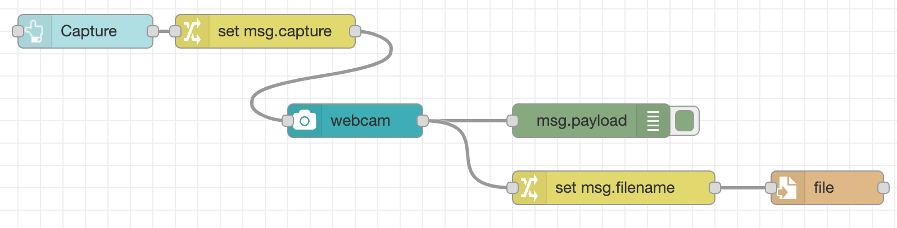
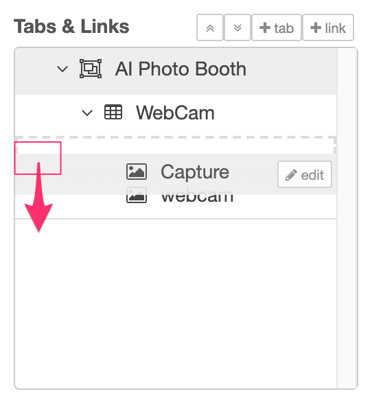
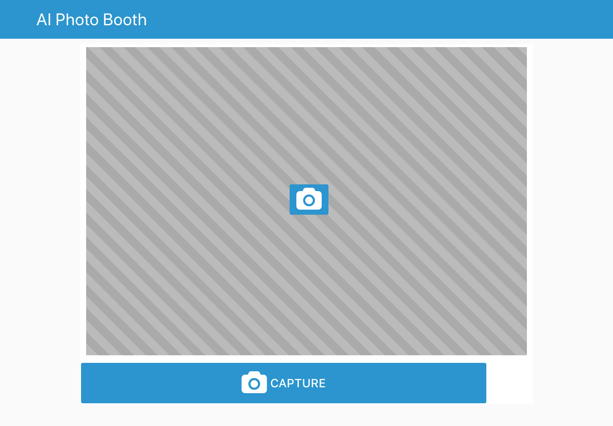
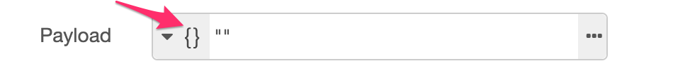
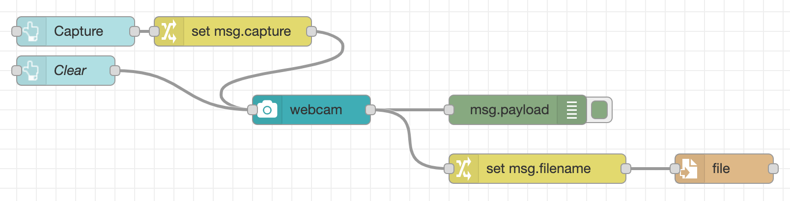

Adding controls¶
Adding a capture button¶
The ui_webcam node is fairly self-contained - providing both the live view
of the camera as well as the button to trigger taking a photo.
The node also supports being triggered by passing it a message with the msg.capture
property set - something we'll make use of next.
- Add a
ui_buttonnode. Configure it as follows:- Set its group to the existing
WebCamgroup. - Set its size to
9x1 - Set the icon to
fa-camera fa-2x - Set the name to
Capture
- Set its group to the existing
- Wire its output to a new Change node, configured to set
msg.captureto thebooleanvaluetrue. - Wire the output of the Change node to the input of the WebCam node.
-
Edit the WebCam node and select the 'Hide capture button' option.

-
In the Dashboard sidebar, the
Capturenode should appear below theWebCamnode. If it doesn't, you can drag theCapturenode down into the right order.
-
Deploy the changes.
The Dashboard will now show the new button beneath the webcam widget - clicking it will trigger a photo to be taken.

Adding a Clear button¶
By default, the webcam node shows the captured image for two seconds before returning to the live feed.
We're going to change that so it displays the captured image until the user either takes another photo or clicks another button to clear it.
- Edit the WebCam node and untick the 'Clear image after...' option.
-
Add a new
ui_buttonnode.- Set its group to the existing
WebCamgroup. - Set its size to
1x1 - Set the icon to
fa-trash fa-2x - Clear the label field.
-
Set the Payload option to the
JSONtype and a value of"".
- Set its group to the existing
-
Wire its output to the input of the WebCam node.
- As before, check the new node appears below the
WebCamandCapturenodes in the Dashboard sidebar. - Deploy the changes.

Now when you click the camera button the captured image will be shown. Clicking the new button will clear the image and return to the live feed.
Next Steps¶
With the initial dashboard created, its now time to add some TensorFlow infused AI.